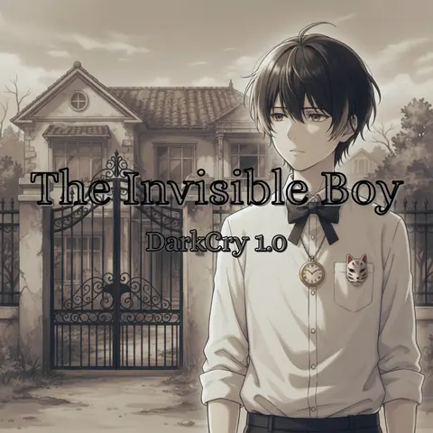
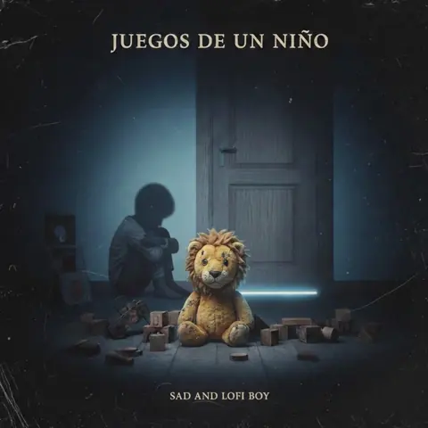
PÁG. 02 · SONG-COVER
Hide & Seek / Childrens Games — adaptación al español
Era 1 / obras conectadas
El documento indica adaptación al español cantada por Sad & Lofi Boy.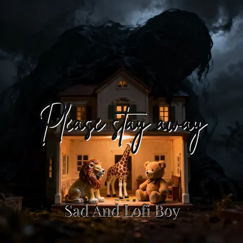
PÁG. 03 · INSTRUMENTAL-COVER
Hide & Seek / Children’s Game — versión instrumental inspirada
Era 1 / obra conectada
La imagen lleva el texto “Please fly away”; el documento la describe como portada instrumental inspirada en Hide & Seek / Children’s Game.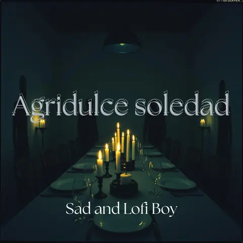
PÁG. 04 · SONG-COVER
Bittersweet Loneliness — “Agridulce soledad”
Era 1 / obra conectada
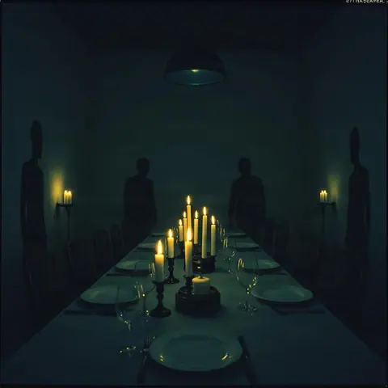
PÁG. 05 · UNTITLED-ART
Imagen vacía / portada sin rotulación
Sin asignación explícita
El documento dice “Imagen vacía”; no asigna álbum ni canción.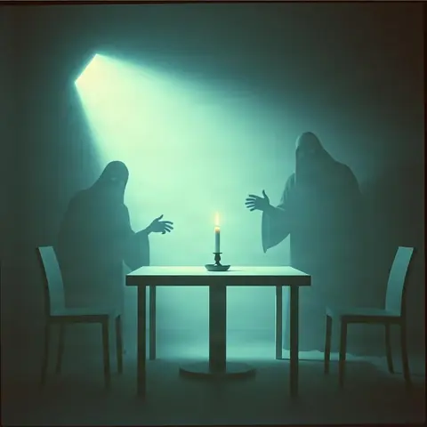
PÁG. 06 · REFERENCE-ART
Ejemplo visual A — mesa / figuras en contraluz
Sin asignación explícita
Página titulada únicamente “Ejemplos”; no asignar a una canción sin confirmación.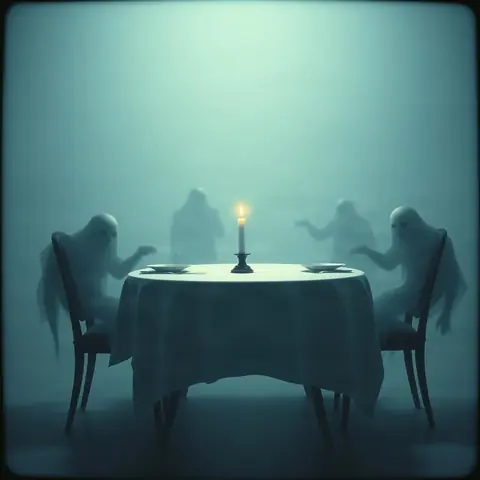
PÁG. 06 · REFERENCE-ART
Ejemplo visual B — mesa / figuras en contraluz
Sin asignación explícita
Página titulada únicamente “Ejemplos”; no asignar a una canción sin confirmación.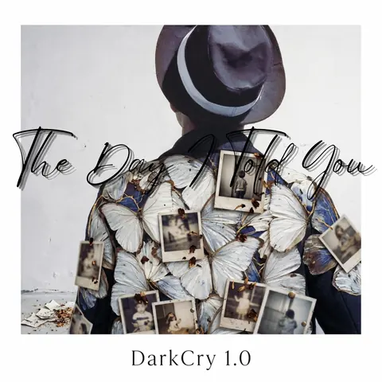
PÁG. 07 · ALBUM-COVER
The Day I Told You
Era 1.5
PÁG. 08 · ALTERNATE-COVER
The Day I Told You — concepto alternativo
Era 1.5
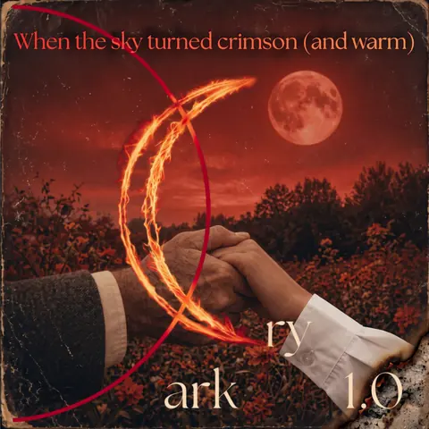
PÁG. 09 · ALBUM-COVER
When the Sky Turned Crimson (and warm) — Side A
Era 1.9
Portada principal Side A según el documento.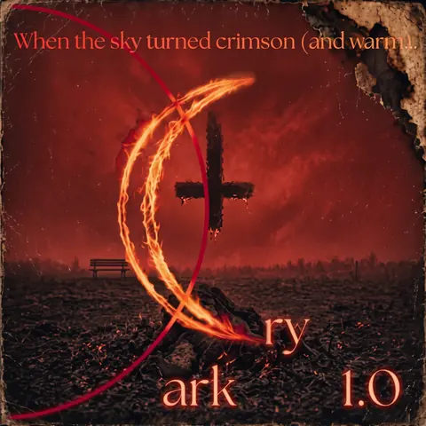
PÁG. 10 · ALTERNATE-COVER
When the Sky Turned Crimson (and warm) — Side B
Era 1.9
Portada alternativa Side B. El PDF la rotula además “Pilar 3”, etiqueta que contradice la jerarquía establecida: Pilar 3 = Walking Through the Blue Street. Se conserva como Era 1.9, no como Pilar 3.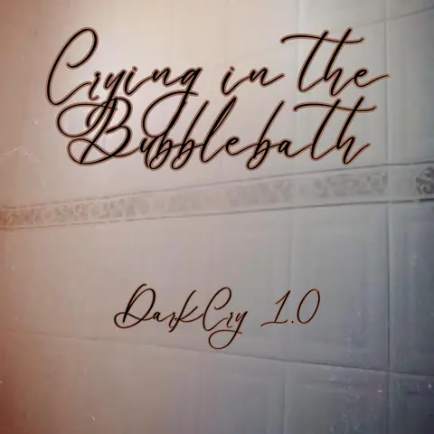
PÁG. 11 · ALBUM-COVER
Crying in the Bubblebath — versión pública censurada
Era 2.0 / Pilar 2
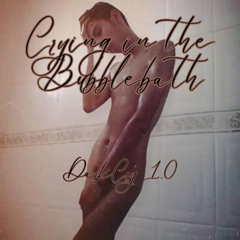
PÁG. 12 · ALTERNATE-COVER
Crying in the Bubblebath — versión inédita sin censura
Era 2.0 / Pilar 2
Versión inédita/sin censura identificada por el documento; separar del arte público.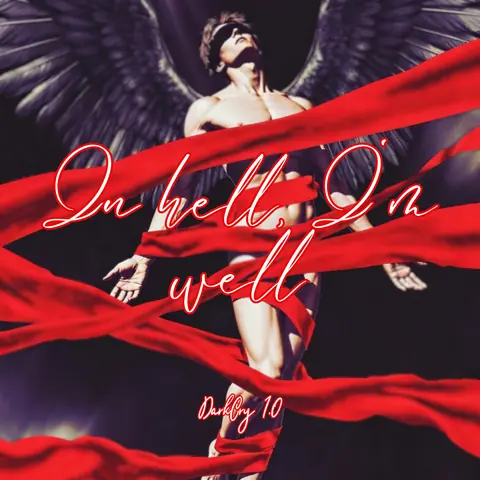
PÁG. 13 · ALBUM-COVER
In hell, I'm well
Era 2.9
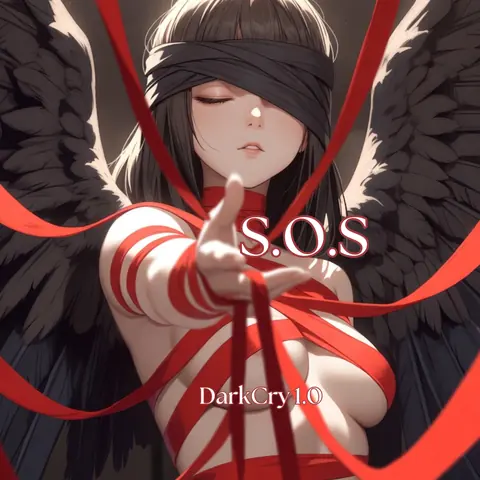
PÁG. 14 · SINGLE-COVER
S.O.S
Era 2.9
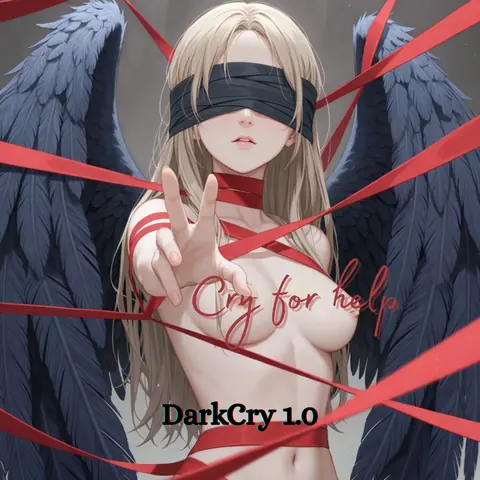
PÁG. 15 · MIRROR-COVER
Cry for help — versión Espejo de S.O.S
Era 2.9
El documento la identifica como versión “ESPEJO” renombrada Cry for help.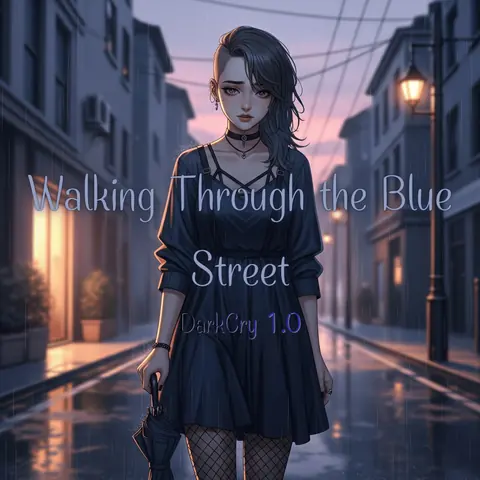
PÁG. 16 · ALBUM-COVER
Walking Through the Blue Street
Era 3.0 / Pilar 3
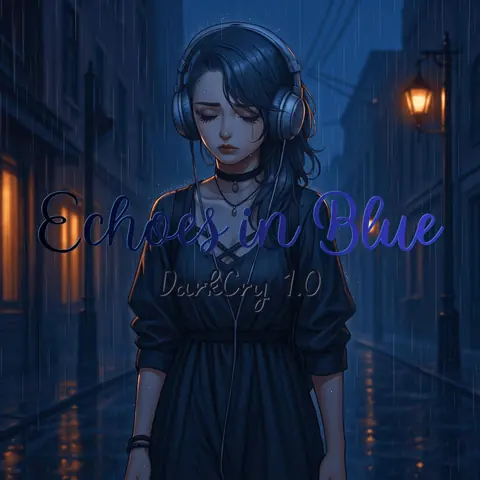
PÁG. 17 · ALBUM-OR-EP-COVER
Echoes in Blue
Era 3.9
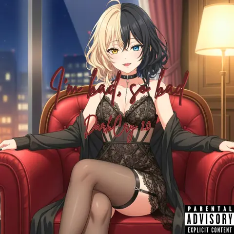
PÁG. 18 · ALBUM-COVER
I'm bad, so bad
Era 4.0 / Pilar 4
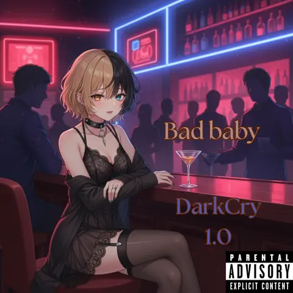
PÁG. 19 · ALBUM-OR-EP-COVER
Bad baby
Era 4.0
PÁG. 20 · SINGLE-COVER
Greys Pants
Era 4.0
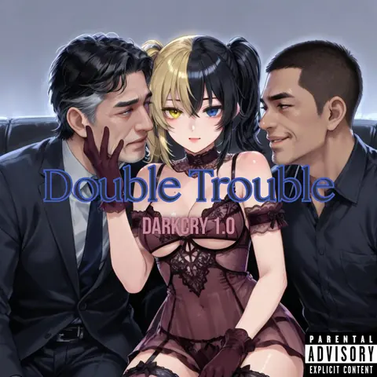
PÁG. 21 · SINGLE-COVER
Double Trouble
Era 4.0
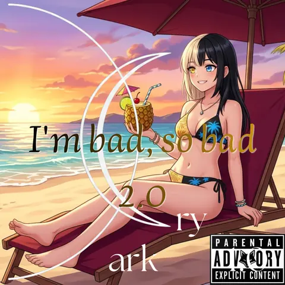
PÁG. 22 · VERSION-ALBUM-COVER
I'm bad, so bad 2.0 — álbum de versiones
Era 4.0
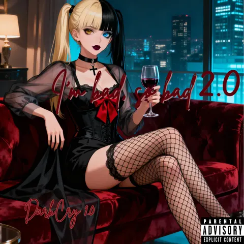
PÁG. 22 · VERSION-ALBUM-COVER
I'm bad, so bad 2.0 — Reggaeton Version
Era 4.0
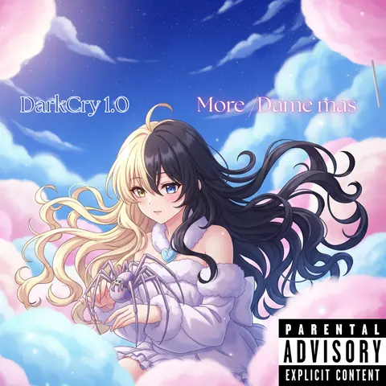
PÁG. 23 · SINGLE-COVER
More / Dame más — versión piloto debut
Era 4.0
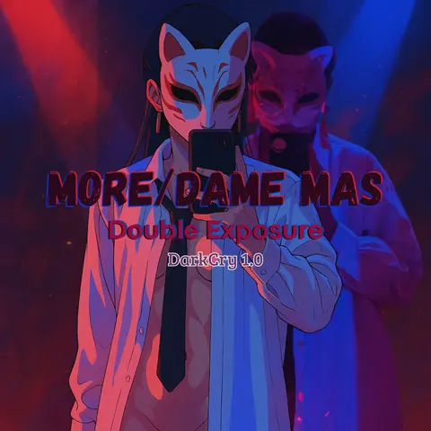
PÁG. 24 · ALTERNATE-COVER
More / Dame más — Double Exposure
Era 4.0
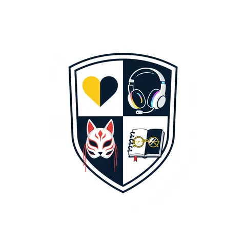
PÁG. 25 · LOGO
Escudo general DarkCry 1.0
Identidad visual
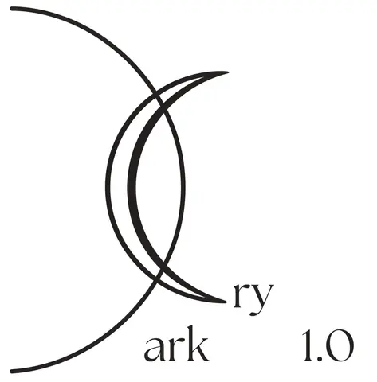
PÁG. 26 · LOGO
Isologo DarkCry 1.0
Identidad visual
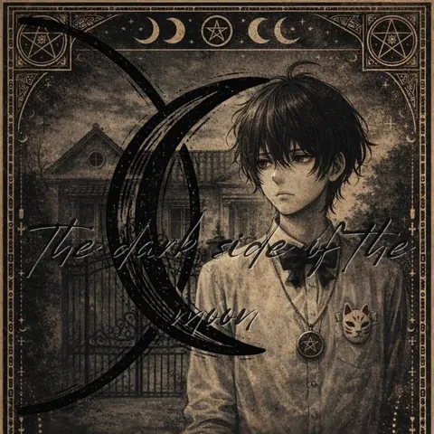
PÁG. 27 · ALBUM-COVER
The Invisible Boy 2.0 (The Dark Side of the Moon)
Álbum 0 / dimensión transversal
El documento lo define como dimensión transversal que corta toda la historia, no como capítulo cronológico común.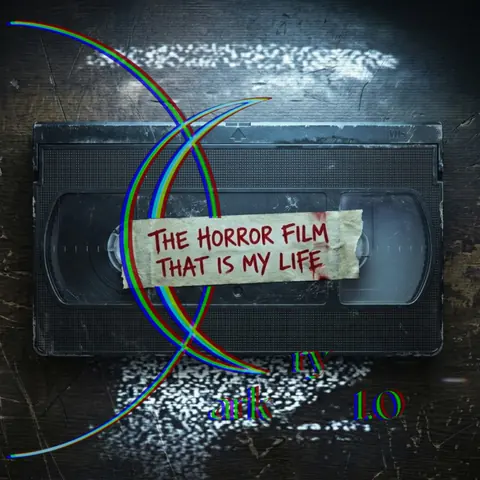
PÁG. 28 · ALBUM-COVER
The Horror Film That Is My Life
Archivo transversal / Tracking Markers
Portada conectada a los tres Tracking Markers según el documento.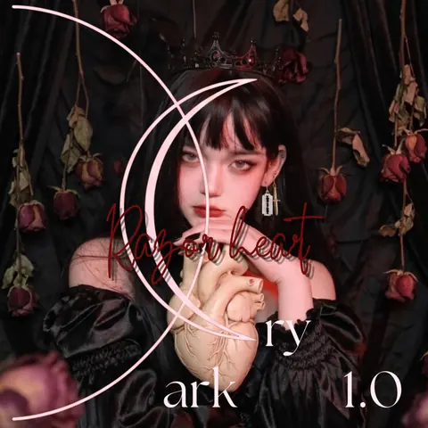
PÁG. 29 · SINGLE-COVER
Razor Heart
Transmutación / versión oscura
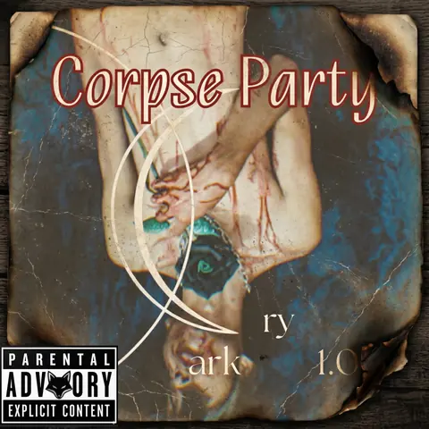
PÁG. 30 · SINGLE-COVER
Corpse Party
Obra conectada
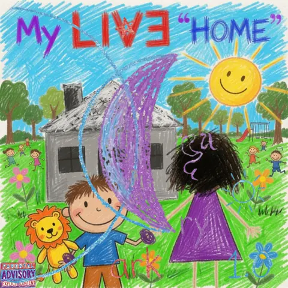
PÁG. 31 · ALBUM-COVER
My LIVE “HOME” — Side A
Precuela / raíz de The Invisible Boy
El documento indica que gran parte del Side A es canónica y converge con The Invisible Boy.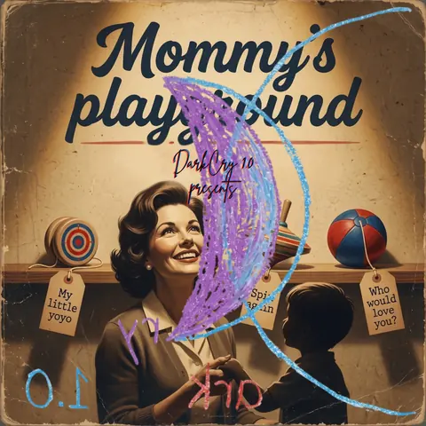
PÁG. 32 · ALBUM-COVER
Mommy's Playground
Era X / infancia transversal
El documento indica que sus canciones son canónicas en cada línea paralela porque comparten los acontecimientos de infancia.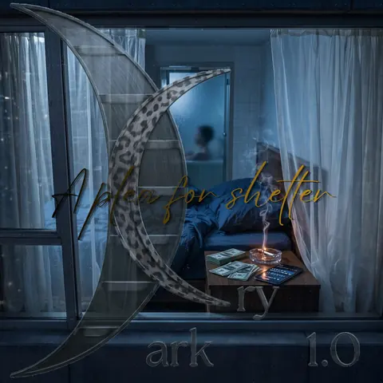
PÁG. 33 · ALBUM-COVER
A Plea for Shelter — My LIVE “HOME” Side B
My LIVE “HOME” / Side B
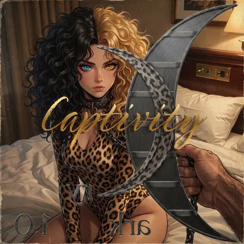
PÁG. 34 · SINGLE-COVER
Captivity
Easter egg / prefiguración de Dolly
El documento lo define expresamente como salto narrativo y easter egg, no como canon formal; protagonista descrita como Dolly antes de su nacimiento formal.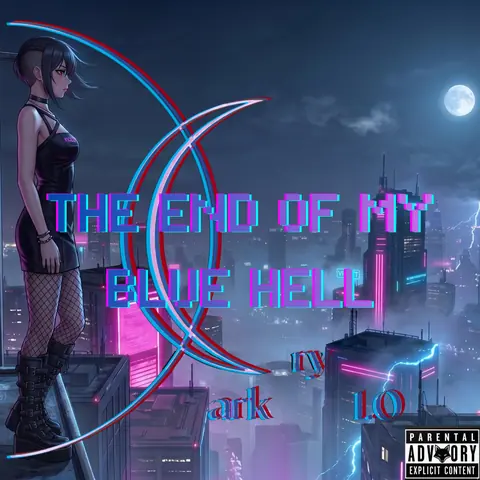
PÁG. 35 · ALTERNATE-TIMELINE-COVER
The End of My Blue Hell
Línea temporal alternativa
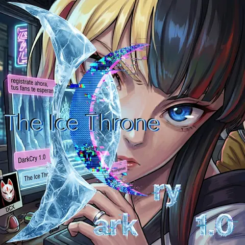
PÁG. 36 · ALTERNATE-TIMELINE-COVER
The Ice Throne
Línea temporal alternativa
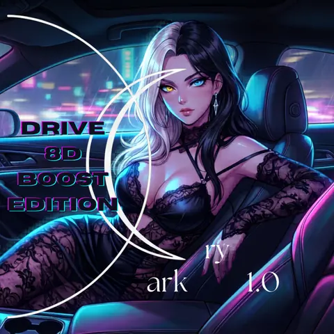
PÁG. 37 · SINGLE-COVER
Drive
Obra conectada
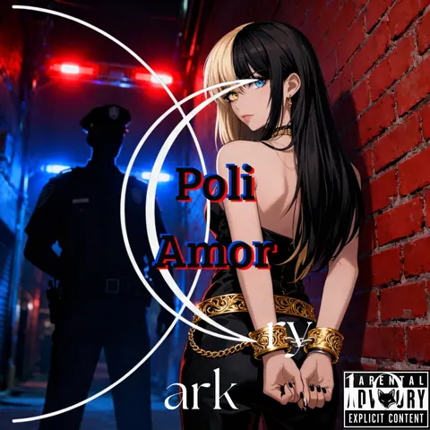
PÁG. 38 · EP-COVER
Poli / Amor
Obra conectada
PÁG. 39 · SINGLE-COVER
Más / AG — Reggaeton Remix
Remix / obra conectada
PÁG. 40 · EP-COVER
Another EP Remixes
Remixes / obra conectada
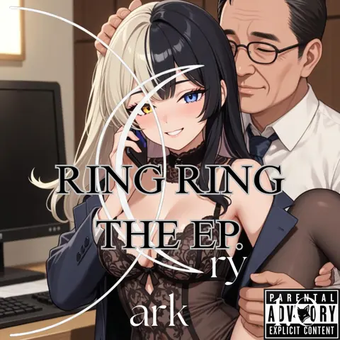
PÁG. 41 · EP-COVER
Ring Ring — The EP
Obra conectada
PÁG. 41 · ALTERNATE-ART
Ring Ring — imagen alternativa A
Imagen alternativa
El documento presenta dos imágenes alternativas sin título individual; no se asume que sean portadas oficiales.PÁG. 41 · ALTERNATE-ART
Ring Ring — imagen alternativa B
Imagen alternativa
El documento presenta dos imágenes alternativas sin título individual; no se asume que sean portadas oficiales.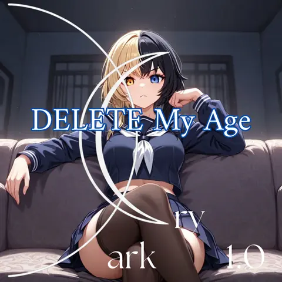
PÁG. 42 · SINGLE-COVER
DELETE My Age
Obra conectada
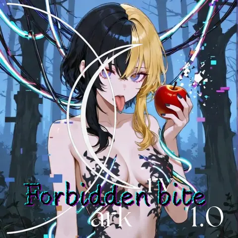
PÁG. 43 · SINGLE-COVER
Forbidden Biter
Obra conectada
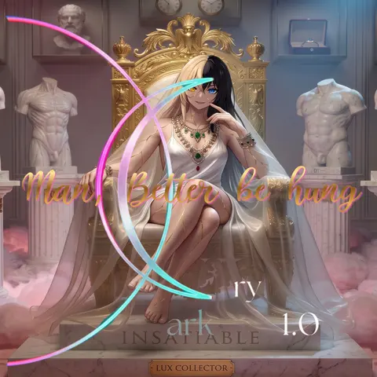
PÁG. 44 · SINGLE-COVER
Man, Better Be Hung
Obra conectada
PÁG. 45 · THERIAN-COVER
Therian Collection — Daddy's Big C*CK
Therian Collection
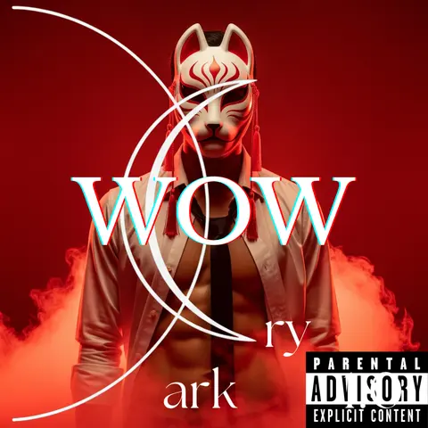
PÁG. 46 · THERIAN-COVER
Therian Collection — WOW
Therian Collection
Imagen dentro del conjunto; el documento no aporta una ficha textual individual.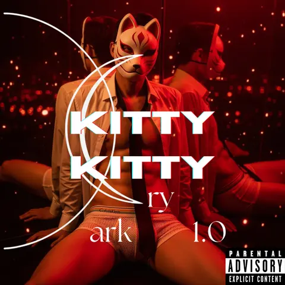
PÁG. 46 · THERIAN-COVER
Therian Collection — Kitty Kitty
Therian Collection
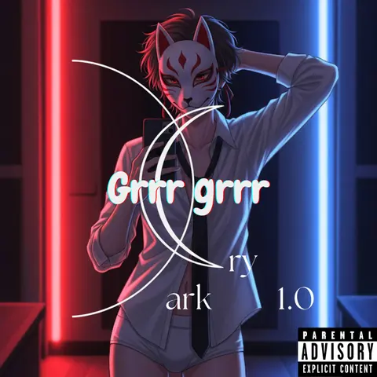
PÁG. 47 · THERIAN-COVER
Therian Collection — Grrr grrr
Therian Collection
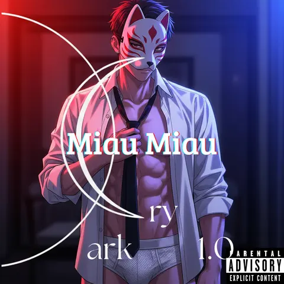
PÁG. 47 · THERIAN-COVER
Therian Collection — Miau Miau
Therian Collection
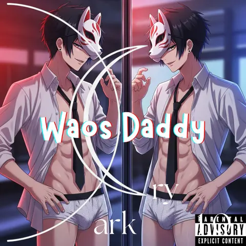
PÁG. 47 · THERIAN-COVER
Therian Collection — Waos Daddy
Therian Collection
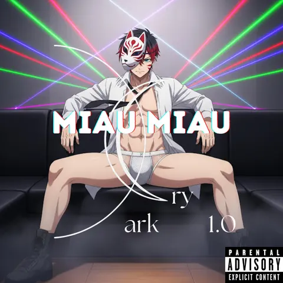
PÁG. 47 · THERIAN-COVER-VARIANT
Therian Collection — Miau Miau (variante visual)
Therian Collection
Segunda imagen con el texto Miau Miau; se conserva como variante, no se colapsa con la anterior.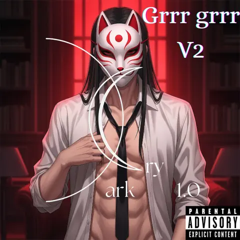
PÁG. 47 · THERIAN-COVER-VARIANT
Therian Collection — Grrr grrr V2
Therian Collection
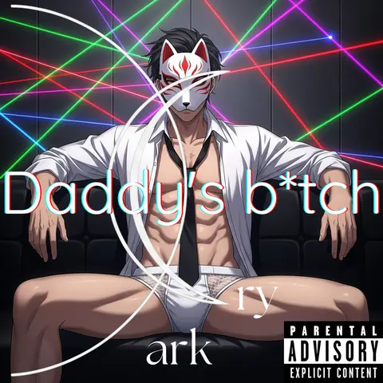
PÁG. 47 · THERIAN-COVER
Therian Collection — Daddy's b*tch
Therian Collection
PÁG. 48 · SINGLE-COVER
Under My Thumb
Obra conectada
PÁG. 49 · ALBUM-COVER
Shadow & Ban
Obra conectada / cierre visual